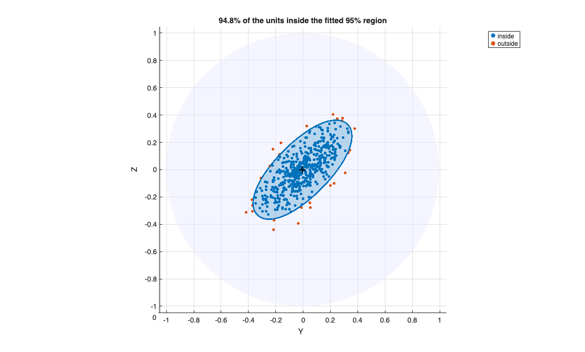

KentMstepFS
KentMstepFS estimates the parameters of a Kent distribution from a (weighted) sampl
Syntax
gamma1=KentMstepFS(Y, w)examplegamma1=KentMstepFS(Y, w, kappa0)examplegamma1=KentMstepFS(Y, w, kappa0, beta0)examplegamma1=KentMstepFS(Y, w, kappa0, beta0, maxiter)examplegamma1=KentMstepFS(Y, w, kappa0, beta0, maxiter, tol)example[gamma1, gamma2]=KentMstepFS(___)example[gamma1, gamma2, gamma3]=KentMstepFS(___)example[gamma1, gamma2, gamma3, kappa]=KentMstepFS(___)example[gamma1, gamma2, gamma3, kappa, beta]=KentMstepFS(___)example[gamma1, gamma2, gamma3, kappa, beta, r]=KentMstepFS(___)example[gamma1, gamma2, gamma3, kappa, beta, r, dq]=KentMstepFS(___)example
Description
KentMstepFS estimates the parameters of a Kent(kappa,beta,Gamma) distribution from a weighted sample of unit vectors on S^2. It is called once per group at each M-step of the tclustkent concentration loop, and it plays the role that kappaFS (together with the resultant vector) plays in tclustvmf.
The estimation proceeds in two stages (Kent, 1982, Section 4;
Mardia et al., 2021, Section 2.3):
STAGE 1 - ORIENTATION (closed form, moment estimator of Kent 1982).
Let xbar and S be the weighted mean vector and the weighted matrix of second moments, xbar = sum_i w_i*y_i / n_w, S = sum_i w_i*y_i*y_i' / n_w, with n_w = sum_i w_i. The pole is gamma3 = xbar/||xbar||. The major and minor axes gamma1 and gamma2 are the eigenvectors (largest and smallest eigenvalue) of S restricted to the plane orthogonal to gamma3, i.e. of the 2-by-2 matrix E'*S*E where the columns of E are an orthonormal basis of that plane. In this way [gamma1 gamma2 gamma3] is exactly orthogonal, gamma3'*xbar = ||xbar|| and gamma1'*S*gamma2=0.
STAGE 2 - CONCENTRATION AND OVALNESS (numerical).
Given the orientation, the log-likelihood divided by n_w is kappa*r + beta*dq - log c(kappa,beta) where r = ||xbar|| is the mean resultant length and dq = gamma1'*S*gamma1 - gamma2'*S*gamma2 >= 0. This function of two variables is concave and it is maximised exactly (the exact normalizing constant KentlogC is used, not its normal approximation) over the region kappa>=0, 0<=beta<kappa/2 with fmincon (Optimization Toolbox) or, if fmincon is not available, with fminsearch.
NOTE: the Kent distribution is defined only on S^2: Y must have 3 columns.
Examples
 Recover the parameters of a Kent distribution.
Recover the parameters of a Kent distribution.
Recover the parameters of a Kent distribution.. Data are generated from a Kent distribution with pole [0 1 0], elongated along [1 0 0] (an elliptical cap).
rng(1)
n = 2000; kappa_true = 50; beta_true = 18;
Y = Kentrnd(n, kappa_true, beta_true, [0 1 0], [1 0 0]);
[g1,g2,g3,kap,bet] = KentMstepFS(Y, ones(n,1));
fprintf('kappa: true=%g, est=%.2f\n', kappa_true, kap);
fprintf('beta: true=%g, est=%.2f\n', beta_true, bet);
disp('Estimated pole (true [0 1 0])'); disp(g3)
disp('Estimated major axis (true [1 0 0], up to sign)'); disp(g1)kappa: true=50, est=50.21 beta: true=18, est=18.38 Estimated pole (true [0 1 0]) -0.0009 1.0000 -0.0033 Estimated major axis (true [1 0 0], up to sign) -0.9998 -0.0009 0.0194
Fitted region superimposed to the data.
Fitted region superimposed to the data.. The 95 per cent region of the fitted distribution is computed with Kentcap; the units outside the region are highlighted.
rng(2)
n = 500;
Y = Kentrnd(n, 80, 30, [1 0 0], [0 1 1]);
[g1,g2,g3,kap,bet] = KentMstepFS(Y, ones(n,1));
[P, thresh] = Kentcap(g1, g2, g3, kap, bet, 0.95);
inside = logKentpdfFS(Y,g1,g2,g3,kap,bet) >= thresh;
sphereplot(Y, 'group', 2-inside, 'cap', {P}, 'center', g3, ...
'labels', {'inside','outside'});
title(sprintf('%.1f%% of the units inside the fitted 95%% region',100*mean(inside)))
Input Arguments
Output Arguments
More About
References
Banerjee, A., Dhillon, I.S., Ghosh, J. and Sra, S. (2005), Clustering on the Unit Hypersphere using von Mises-Fisher Distributions, J. Machine Learning Research, Vol. 6, pp. 1345-1382.
Kent, J.T. (1982), The Fisher-Bingham distribution on the sphere, J. Roy. Statist. Soc., B, Vol. 44, pp. 71-80.
Mardia, K.V., Barber, S., Burdett, P.M., Kent, J.T. and Hamelryck, T.
(2021), Mixture models for spherical data with applications to protein bioinformatics, arXiv:2104.13140.
See Also
tclustkent
|
KentlogC
|
logKentpdfFS
|
restrKentFS
|
Kentrnd
|
Kentcap
|
sphereplot